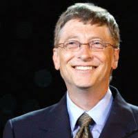

Born and raised in Seattle, Washington, Gates co-founded Microsoft with childhood friend Paul Allen in 1975, in Albuquerque, New Mexico; it went on to become the world's largest personal computer software company.[4][a] Gates led the company as chairman and CEO until stepping down as CEO in January 2000, but he remained chairman and became chief software architect.[7] During the late 1990s, he had been criticized for his business tactics, which have been considered anti-competitive. This opinion has been upheld by numerous court rulings.[8] In June 2006, Gates announced that he would be transitioning to a part-time role at Microsoft and full-time work at the Bill & Melinda Gates Foundation, the private charitable foundation that he and his wife, Melinda Gates, established in 2000.[9] He gradually transferred his duties to Ray Ozzie and Craig Mundie.[10] He stepped down as chairman of Microsoft in February 2014 and assumed a new post as technology adviser to support the newly appointed CEO Satya Nadella.[11] In March 2020, Gates left his board positions at Microsoft and Berkshire Hathaway to focus on his philanthropic endeavors including climate change, global health and development, and education.[12]
Since 1987, he has been included in the Forbes list of the world's wealthiest people[13] From 1995 to 2017, he held the Forbes title of the richest person in the world all but four of those years.[15] In October 2017, he was surpassed by Amazon founder and CEO Jeff Bezos, who had an estimated net worth of US$90.6 billion compared to Gates's net worth of US$89.9 billion at the time.[16] As of November 2020, Gates had an estimated net worth of US$113.7 billion, making him the third-wealthiest person in the world, behind Bezos and Elon Musk.[17][b
Versions of Windows:
- Windows 1.0
- Windows NT 3.1
- Windows 95
- Windows 98
- Windows 2000
- Windows XP
- Windows Vista
- Windows 7
- Windows 8
- Windows 10